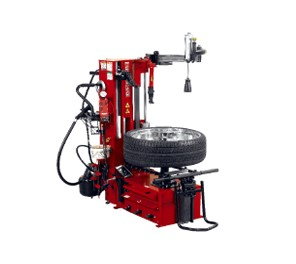

ПОЇХАЛИ НА ЛИПОВУ...
Потрібно замінити мастило чи зробити діагностику?
Якийсь незрозумілий звук з під капоту?
Їсть гуму чи уводить автомобіль?
Вже літо, а я ще на зимовій гумі!
Тоді, ласкаво просимо до нас.
Нащі досвідчені майстри на надсучасному обладнанні виконають необхідні роботи з високою якістю та в найкоротші сроки. Досвід роботи майстрів становить не один десяток років, а кількість відремонтованих авто навіть не піддається обрахунку. Можливе замовлення та встановлення деталей для ремонту на місці.
Виробник та марка автомобіля не мають значення, єдине, що можуть бути питання до занадто потриманих авто. Можливий розрахунок як за готівку, так і безготівковий.
Завітайте до нас
З повагою, Анатолій.